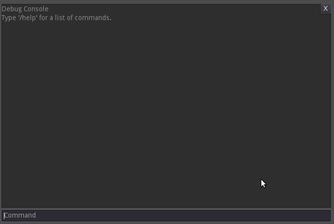

DebugConsole
Debug console
Inherits from Control
Description
A debug console that you can use for general-purpose testing.
The recommended way to use this console is to put it under a CanvasLayer node and hide it from the editor. Then make sure that whenever you want to show the console, activate() is called. If done correctly, the console should look something like this: 
Properties
| Type | Name | Default |
|---|---|---|
| Script | command_script |
• Script command_script — A script which provides a list of user-defined commands for the console to parse.
There is a particular syntax when it comes to this script. First, there needs to be an array called valid_commands: it should be a constant, but using a mutable variable will not produce an error. Second, there must be a variable named remote_nodes, and unlike the previous must be editable. Third, there should be a variable called parent_node: it shall accept a reference to this console node. To avoid errors with types, you should make the variable Variant or Node. Lastly, the script must extend from Node.
The valid_commands array has a particular structure that must be respected. Each element is a nested array with three elements: [ String command, [?int param1 ... int paramN?], [?String param1 ... String paramN?]
The first element is the name of a function which shall exist in the same script. Next is a list of integers that denote parameter types: use a constant of Variant.Type or -1 to make it a Variant. Finally, the third element is a list of parameter names which correspond to the second element.
When a command is evaluated, a function of the same name is called with the parameters pulled from the input box. Parameters are interpreted as strings by default unless they take forms that are valid for other types, in which case they are converted to the appropriate type. See below for a list of supported types and what kind of strings are converted. The function is expected to return a String, event an empty one, as that return value is the output of the command printed to the console.
Imagine you have a function that takes an int called test. The command of the same same name will be called with the first parameter interpreted as an integer. Should the conversion fail, an error is produced.
To see what types there are, type "/types" in the console window.
Methods
• Variant activate()
Activates the debug console.
Call this once to activate the console. Pauses the scene tree and grabs focus.
• Variant deactivate()
Deactivates the debug console.
Call this function to hide the debug console and to unpause the scene tree.
• void output_text(String text)
Output text to the console.
Writes the string text to the console text window. If a text begins with an at-sign it is interpreted as a message to be specially formatted.
@argcount:X:Y -- Generates an error message about the number of arguments. X is the number of arguments expected, and Y is the the number of arguments received.
@arrayneed:P:C -- Generates an error message about the array P does not have enough data. (It expects C elements.)
@error:MSG -- Generates an error message. MSG is the message to display.
• void process_command(String text)
Processes a command.
Processes the command string text. If the string begins with a '/', it is treated as a builtin command. An error is emitted if the command does not exist in the database as it's configured.
Builtin Commands:
/help -- Display a list of supported commands
/types -- Displays all the supported data types
/print ARG -- Prints the ARG, interpreting as one of the supported data types
/exit -- Deactivates the console